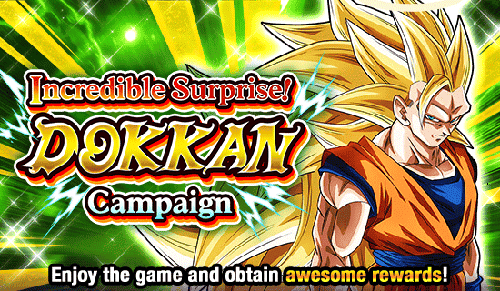
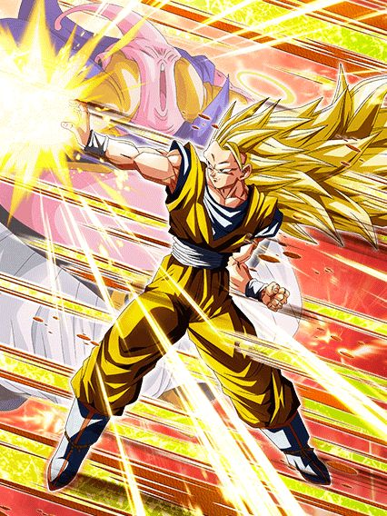
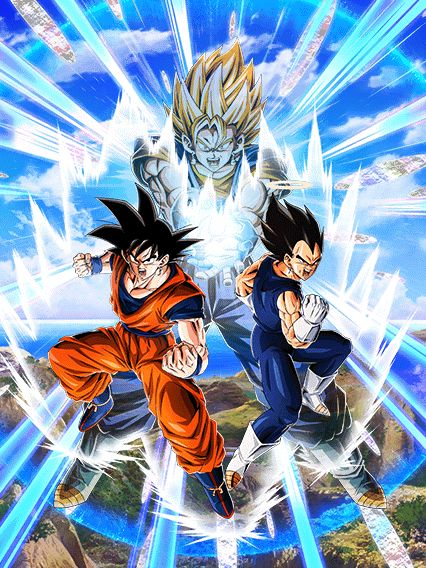
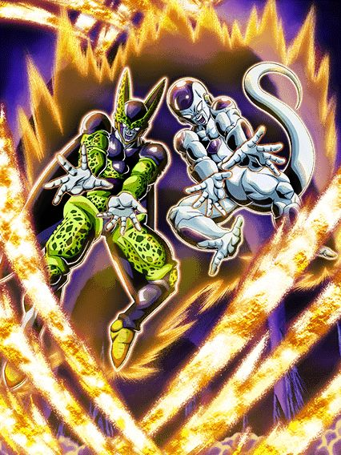
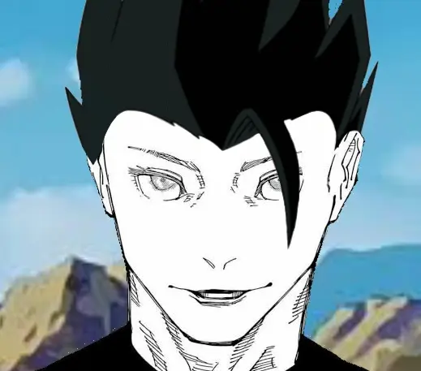
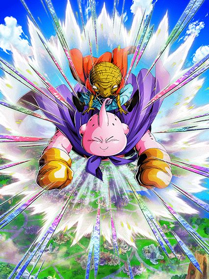

A melhor Golden Week de todas.
Apesar da golden week de 2023 ter sido divertida, especialmente pelo tema, essa aqui não tem comparação, tudo é hype.

Ele não está atrasado.
Finalmente, um dokkan fest com leader skill pra 3 categorias, obrigado Akatsuki!11!1!1!!!!1
Esse cara é um dos cards mais "fiéis a história" que existe, já que o objetivo dele é ganhar tempo enquanto o time fica mais forte
Mas já fica avisado: Você absolutamente PRECISA ter um aliado Majin Buu Saga no turno com ele, ou pelo menos no time, caso contrário ele perde a função principal dele q é tankar
E com esse aliado, o goku ativa a lendária intro se transformando em ssj3 e ganha 90% de redução de dano no turno, extremamente balanceado
Essa redução de dano vai diminuindo em 15% por turno, mas como eu disse, o goku vai ganhar tempo sendo uma parede até o resto do time buildar e etc
Além disso, com a intro ele tem 80% de chance de critar por 5 turnos, que é muito forte já que ele dá bastante dano
O goku já tem um adicional com 70% de chance de ser um super sem nenhuma condição, e se estiver no slot 2 ou 3 ele tem mais 100% de ATK e lança um super adicional garantido, então nesses slots ele consegue lançar um quádruplo super com 80% de chance de critar, será que é forte?
Enquanto a redução de dano estiver alta, ele no slot 1 fica mais defensivo, ganhando 100% de DEF a mais e defesa ativa, então ele realmente vira uma parede temporária e depois que a redução acabar, só colocar ele nos outros slots pra ele virar uma máquina de dano
Por sinal o goku builda 5% de redução de dano por super attack feito, que honestamente é bem horrível já que tem um limite de 30% e demora muito pra maximizar isso (mas sim, se no turno 1 você der 2 supers ele tem 100% de redução de dano)
Ele também tem uma 50% de chance de counterar super attacks de Ki, que é meio ignorável mas né, tá ali
E pra finalizar, a active skill dele.

E essa active é bem a fórmula básica de uma active skill hoje em dia, dano alto e crítico garantido no turno
Única coisa é que pra usar ela você novamente precisa de um aliado Majin Buu Saga no turno, essas restrições são chatas mas não atraphalham tanto pq não é difícil né
Por sinal, TODAS as animações e OSTs do goku são muito boas, eles realmente acertaram demais nesse card, lindo demais.
Um card "desvia ou morre" meio estranho.
Tipo, em geral ele é um card secundário decente, exceto pelo fato de ele ter 70% de chance de ter +7 de ki...???
Tirando isso, ele tem 70% de chance de desviar por 7 turnos (depois cai pra 50%), um adicional com 70% de chance de ser super que é decente, e cada super que ele fizer ele ganha mais 20% de chance de critar até chegar em 77%, que é bem alto
Ele tem 77% de ATK e DEF se estiver no slot 2 ou 3, e builda outros 77% com 4 desvios feitos
O gotenks também tem 7 turnos com mais ATK e DEF, junta isso com o desvio q eu já falei e o crítico e dano q vc buildar e ele dá um dano legal e até consegue tankar se o desvio falhar, mas ele só faz isso mesmo, não tem suporte nem nada, mas funciona bem como um floater no time do goku ssj3.
")
Quando o personagem precisa reviver mas ele é bom demais pra isso:
O Buu é uma literal parede, e não é algo temporário tipo o goku ssj3, ele literalmente tanka qualquer coisa
Esse cara stacka DEF, tem um adicional com 70% de chance de ser super, cura HP pra caramba, tem defesa ativa caso esteja acima de 50% de HP e isso é super fácil por causa da cura constante
E tudo isso é muito bom, se não fosse por um problema..
O buu tem um revive, mas é o tipo de revive mais chato, onde específicamente ele tem que morrer pra ativar, e isso é muito difícil já que ele é muito tank
O jeito mais fácil de fazer isso seria tentar deixar ele morrer no começo da luta, mas ainda assim é difícil, e quanto mais a luta demora, mais ele stacka, e mais difícil isso fica
Ele não precisa reviver obrigatoriamente pra ser bom, mas ajuda demais, já que pós revive ele lança um super adicional garantido, a defesa ativa fica incondicional e ele ainda tem +100% de ATK e DEF pra sempre, que é útil já que o dano dele não é muito alto e ele não tem Big Bad Bosses
De novo, ele não precisa do revive pra ser bom, mas se ele conseguir o revive, ele fica ainda mais quebrado
E pra completar, ele tem uma active skill hilária com uma das melhores OSTs do jogo
A active dá um daninho ruim, mas impede o inimigo de atacar no turno, e transforma TODOS os orbs em doces, e obviamente o Buu consegue curar HP pegando doces, oq basicamente faz a active skill ser um reset na partida, já que você não vai levar dano nesse turno e vai voltar a 100% de HP, extremamente forte
Bom, é isso, o Buu é facilmente um top 5 TURs já que ele faz de tudo, e ainda é um buff pra Extreme Class, lesss gooo
Ele é um card desvia ou morre, é só isso.
Esse cara precisa estar num time full Majin Power, e se estiver, tem 70% de chance de desvio, um super adicional garantido e crítico garantido
E ele basicamente é só isso, se ele não estiver no time completo, ele não tem passiva
Ele também pode sobreviver a um golpe fatal e ficar com 1 de HP caso o desvio falhe, que é legal, eu acho
E ele tem 50% de chance de counterar supers de Ki, que é decente já que o dano dele é bem alto
Ele é bom no time? É
Mas fora dele, ele não serve pra absolutamente nada.

Trouxeram eles adiantados pro global e eu estou em lágrimas.
Esse EZA conserta TODOS os problemas que esses caras tinham, q eram uma forma base incapaz de muita coisa e pós fusão eles não tinham defesa nenhuma
E agora eles são lendas.
Agora o goku e vegeta stackam DEF em ambos super attacks, já corrigindo o problema da defesa instantaneamente, e eles stackam muito rápido já que eles podem lançar4 supers por turno
Esses caras simplesmente lançam um super adicional garantido se teu HP estiver acima de 77%, junto com mais um adicional com 70% de chance de ser um super, se fosse fácil assim em outros cards a vida era boa
Mas nem tudo são flores, pq esse card tem uma falha q pode vir a ser perigosa
Assim como o Gohan e Piccolo dokkan fest, esses caras tem uma redução de dano ligada ao HP que pode acabar no meio do turno
Eles sempre tiveram 30% de redução de dano, mas agora, enquanto estiverem acima de 50% de HP, a redução aumenta pra 50%
E como eu já disse, é igual ao Gohan e Piccolo, então um super turno 1 slot 1 ou um ataque em área pode acidentalmente dilacerar a defesa deles, preocupante
E outra coisa é a bendita condição de fusão, q é boa mas tem probleminhas..
Não podem mudar condições de Active Skills com EZAs, então continua sendo estar abaixo de 77% de HP a partir do turno 4, que é decente, mas as vezes esses caras podem stackar tão rápido q eles ficam essencialmente presos na forma base pq ninguém no time toma dano o suficiente pra fazer a fusão
Não que a forma base deles seja ruim, mas considerando oq o vegetto pode fazer.. e é bom sempre tentar se fundir né
E logicamente essa condição é 30x melhor que os blue boys AGL pq slk oh cardzinho da desgraç-
Enfim, o vegetto.
Meu Deus do céu.
AVISO: 9 em cada 10 médicos recomendam isto para prevenção de supers turno 1 slot 1.
O vegetto é mais um desses cards que era muito difícil eles conseguirem zuar, já que sem EZA o cara já tem 10 turnos de scouter
Tipo, onde mais cê vai achar um card assim? KKKKKKKK ele é o único do jogo com essa habilidade
Bom, como eu mencionei antes, eles melhoraram a defesa do Vegetto, e fizeram isso MUITO BEM, já que além de toda a DEF q vc stackou antes da fusão, esse cara tem 30% de redução de dano e +30% pra ataques normais
E não para por aí, já que esse cara ainda tem defesa ativa por 3 turnos, então ele literalmente é uma muralha invencível contra ataques normais e consegue tankar super attacks muito facilmente também
O vegetto tava num nível onde nem ataques básicos ele conseguia tankar pra mandar os counters dele, mas agora ele tanka como se não fossem nada, meu goat
E já que falei dos counters, ele obviamente tem os melhores do jogo, já que agora ele tem 50% de chance de crítico e cada ataque que ele fizer no turno aumenta a chance em 20%, então sim, os counters ativam isso e com só 3 ataques ele consegue dar crítico garantido
Verdade, eu quase esqueci que ele cura 100% de HP no turno da fusão KKKKKKKKKKKKK
Enfim, o vegetto é simplesmente desbalanceado, o cara tem um dano absurdo em quantidades insanas por causa dos counters, que EZA lindo senhores
O ÚNICO problema é o fato do Vegetto agora ter esse monte de crítico, pq ele não tinha nada antes, então a build do hidden potential dele era full crítico e agora não é mais, fazendo uma galera ter q gastar DSs pra mudar o hidden potential dele pra adicional e desvio (eu fui incluído nessa galera)
De qualquer forma, eu amo esse card, meu goat

Esse cara só não é o melhor Extreme Class do jogo pq eu ainda amo o Zamasu TEQ.
Eu sempre achei esse cara legal pelas animações muito boas dele e a OST dele é muito maneira, mas slk, eles realmente deixaram ele muito forte
O Buu é um card de stack, e agora FINALMENTE ele pode stackar de fato, já que os stacks dele que eram de 30% aumentaram pra 50% por super, e ele tem um monte de coisa pra ajudar ele no começo da partida
Pra começar, ele já tem a combinação divina: Defesa ativa + Desvio + Stacking
O cara tem defesa ativa garantida no primeiro turno e depois fica com 70% de chance de defesa ativa (sim isso é uma desgraça mas ela ainda fica ativa 100% das vezes se vc entrar no turno com menos de 90% de HP), tem 30% de chance de desvio que é decente já que ele tem outras mecânicas pra ajudar
Além de q ele fica curando HP muito rápido, lança um super attack adicional garantido pra sempre, e caso vc entre no turno com menos de 80% de HP, o desvio dele aumenta pra 50% e ele sobrevive a um golpe fatal, que eu não sei se é muito útil mas beleza né
E ele tem uma condição de absorção ultra mega fácil que é estar acima de 50% de HP a partir do turno 4, e sabendo que ele fica curando, outros personagens Majin Power também ficam curando e obviamente os links dele também curam, é a coisa mais fácil do mundo
Enfim, o buutenks é um card que te dá muita escolha, já que ele não vai ter problemas se vc quiser continuar stackando, ele vai seguir fazendo isso muito bem e de uma forma competente
Mas, se você for transformar logo..
")
Eu vou ser bem direto: Se vc stackou muito esse cara é um deus e se você não stackou nada ele continua sendo.
Ok, o buuhan é simplesmente invencível, não tem jeito
Pra início de conversa, ele tem um super adicional garantido, 50% de chance de desvio e defesa ativa, todos permanentes sem condição nenhuma
E nos primeiros turnos de aparição desse cara ele é uma máquina, já que além do adicional garantido ele ainda lança mais um super adicional nos primeiros 3 turnos dele, e isso é extremamente quebrado pq em ambos super attacks ele aumenta o ATK e DEF em 30% por 4 turnos.
Isso é absurdo de forte, pq ele já começa com quase 1 milhão de defesa e um dano insano, e depois de todos esses supers garantidos, no turno seguinte ele vem AINDA MAIS forte, eu já peguei esse cara em turnos com quase 2 milhões de defesa antes de dar super
E o mais engraçado disso é que quanto mais tempo da luta passar, mais forte ele fica, já que por 5 turnos depois de transformar ele tem um pouquinho de ATK e DEF a mais e quebra 1 ação do inimigo, mas depois que esses 5 turnos passarem ele fica com 100% de ATK e DEF a mais, e isso é hilário KKKKKKKK
Como se não bastasse tudo isso, ele ainda tem uma mecânica bem interessante que funciona assim: Se vc terminar um turno com mais de 50% de HP, no turno seguinte q ele voltar, ele vai ter 50% de ATK a mais PQ SIM
Esse cara tem MUITO ATK, MUITA DEF, com defesa ativa e desvio por cima.. eu já mencionei que transformado em buuhan ele ganha Big Bad Bosses?
Enfim, o buuhan é quebrado, é simplesmente insano, ele basicamente não tem nenhum turno de risco ou possível fraqueza, e por causa dos stats absurdos dele, os stacks q ele pega na forma base são muito altos, e transformado ele é praticamente invencível contra tudo, não tem jeito
Eu particularmente compararia a simples capacidade defensiva desse cara com o Zamasu Infinito que de fato leva 0 de dano de todo, o buu é realmente tão bom quanto parece
A única falhazinha dele é que mesmo dando supers de mais de 20 milhões de dano, se ele não critar, não vai parecer muito impressionante, então torça pelo crítico e aproveite esse card incrível.
")
Isso é bem legal, eles lembraram que ele existe.
Esse cara é uma opção até decente caso não tenha personagens Majin Buu Saga o suficiente no time, já que ele dá um dano legal e até fica efetivo contra tudo caso tenha outro personagem Majin Buu Saga ou Kamehameha com ele no turno
E sim, ele é um card desvia ou morre, mas é impressionante que ele seja decente nisso, já que a passiva inteira dele antes do EZA era "50% de chance de ter 180% de ATK" e eles decidiram colocar desvio nele, brabo
Enfim, ele tem 30% de chance de desvio e se estiver com mais de 60% de HP, o desvio aumenta pra 60%, que é bem decente pra um F2P
Em geral eu até gostei desse card, muita gente queria que ele ganhasse um Dokkan Awakening e virasse um LR mas eu aceito esse EZA por ele ser bem decente

Se você não chama esses caras de Fortnite LR você está automaticamente errado.
Eu vou ser direto: Esse card está por uma linha de passiva de ser muito bom
Eles são um suporte pra Sworn Enemies, Revenge e GT BOSSESKKKKKKKKKKKKKK e se tiver qualquer aliado em uma dessas categorias no time, eles ativam uma intro que é boa, dá um pouquinho de ATK e DEF e 30% de chance de desvio por 6 turnos, decente até
O problema vem depois, já que eles ganham +20% de chance de desvio e ficam efetivos contra tudo se o inimigo estiver selado ou stunado, já começa a desgraça aí, quase impossível de ativar isso
E não satisfeitos, eles ainda aumentam o desvio em +20% e lançam um super adicional garantido se o inimigo estiver debuffado.
Já deu pra entender qual o problema né?
Esses caras podiam ter 70% de chance de desvio e mais outras paradas se eles simplesmente fossem menos restritos
Tipo, eles já são restritos o bastante pelas categorias horríveis que eles tem, já não é suficiente não?
Eles tem uma Active Skill que dá dano e sela super attack, bem útil também slk maravilhoso
Mas tudo bem guys!1!1!1!! Eles tem um INCRÍVEL FANTÁSTICO 50% de chance de crítico contra um personagem chamado Goku, PARABÉNS.
Ok, eu me enganei, a Kefla não era a anomalia, o super vegeta str que tava errado mesmo.
Esse cara era um dos EZAs bem hype por ele ter muita redução de dano, e pra nossa surpresa, foi exatamente isso que eles buffaram
Antes o buu ganhava mais redução de dano a cada transformação, agora ele tem 40% pra sempre e ganha mais 30% se tiver um aliado Majin Power (uau, é o time dele), que é obviamente muito forte
Além disso ele dá um dano muito bom e como agora ele tem defesa de verdade com toda essa redução de dano, essa forma q ele só fica por 1 turno já é muito boa
Bom, o buu é o card paralelo do Gotenks INT, então ele também se transforma no turno 3 automáticamente
É praticamente impossível matar esse cara.
Além de ele aumentar os stats que ele já tinha (q são bem altos) e manter esses 70% de redução de dano, ele ainda tem 50% de chance de desvio, ou seja, se você leva um golpe, tem 2 opções:
1: Ele não toma dano
OU
2: Ele não toma dano
Além de ele ter 70% de chance de stunar o inimigo, que é útil dependendo da fase q vc estiver
Uma coisinha que esse cara tem é que ele ganha +50% de ATK e DEF caso não tenha nenhum inimigo Majin Power, e como a red zone de majin buu saga é a única q vai ter inimigos nessa categoria, o buu teq domina todo o resto do jogo.
Bom, se vc fizer a mesma estratégia do Gotenks INT e dar float nesse cara logo quando ele aparecer no turno, quando ele voltar vc pode transformar ele já, mas diferente do Gotenks, esse cara não precisa de pressa pra transformar, então fica a dica aí
DaTruthDT uma vez disse: "Pq ele aumenta o ATK em 100%?"
Esse cara é uma máquina de destruição, e é tão simples quanto parece
Ele continua com a redução de dano, então vc já sabe que ele segue sendo uma parede, mas o dano dele agora.. rapaz..
Se for focar só no ATK, esse cara tem 250% na passiva, +100% quando fizer um super attack, e no super attack ele aumenta mais 100%
E como se não bastasse, ele ainda ganha mais 50% de ATK e 25% de chance de crítico por rainbow orb pega, então com 4 rainbow orbs ele tem mais outros 200% de ATK e crítico garantido, tem como tankar?
Esse cara é simplesmente um monstro em dano e defesa, mais uma adição perfeita pro time Majin Power e considerado por muitos o melhor TUR com EZA do jogo.. bom.. por 1 semana né
Outro certo personagem TEQ tomou o posto dele bem rapidinho..

O único capaz de destronar o rei.. é ele mesmo.
Esse é realmente o hype no ápice, o momento mais esperado e inesperado de todos os tempos.. o goat está de volta.
Uma coisa q eu sempre pensei é que não importa o que fizessem num EZA pro Gohan TEQ, ele ia sair quebrado do mesmo jeito, e eu estaria certo.
Se eles não tivessem buffado ele até demais.
Bom, o senhor dos stacks agora tem uma ajudinha no único turno de perigo dele que é o turno 1
No primeiro turno do Gohan ele tem 30% de redução de dano e defesa a mais, obviamente isso não é necessário depois de ele mandar 4 SUPER ATTACKS
É isso mesmo, agora o gohan pode lançar 4 super attacks por turno, eles realmente buffaram ainda mais o poder de stack do Gohan, os cara são muito loucokkkkk
E é basicamente só isso, ele também ganhou um buffzinho de ATK mas é meio irrelevante pq quanto menos dano, mais vc pode stackar né
E sim, stackar 50% de ATK e DEF por super é divertido pra caramba, mas agora eles decidiram dar um incentivo pra transformar o Gohan, já que agora ele fica muito forte, e eu digo MUITO mesmo
O card perfeito.
Pra começo de qualquer conversa, o gohan multiplica tudo q ele stackou em valores absurdos, então não se assuste se sua defesa quase dobrar ou algo assim
E se não bastasse isso, agora ele aumenta o ATK e DEF no super attack por 3 turnos, então depois de 1 turno transformado ele vai estar AINDA MAIS forte
E ele realmente vai estar, pq agora ele lança um super attack adicional garantido pra sempre, e depois de levar 1 ataque ganha 58% a mais de ATK e fica efetivo contra tudo pra sempre
E agora ele simplesmente dá crítico garantido se tiver um inimigo Majin Buu Saga ou se qualquer inimigo estiver com mais de 58% de HP, simplesmente quebrado
E é isso.
Deu pra notar que não encheram a passiva dele de coisa, mas oq colocaram é o suficiente pra ele ficar como top 10 cards por mais uns 5 anos quando ele ganhar um Super EZA..
Enfim, o Gohan TEQ ganhar EZA na minha opinião é um marco bem importante, já que esse cara literalmente botou medo na Akatsuki de colocar defesa ativa permanente em qualquer outro personagem, eles tão saindo desse medo por agora nesse ano, loucura demais
Enfim, falem oq falar, o goat é o goat, não tem argumentos.
Ao enfrentar o boss mais difícil da história, Gogeta Blue, o time Majin Buu Saga perguntou ao Gohan TEQ: "Quem venceria? Ele ou você?"
"Bom, se ele mandar um super attack de 3 milhões de dano, vai me dar uma canseira danada.."
"Você perde?"
"...Nah, I'd stack."


Huh? Um EZA de prime battle decente? Deve ser um milagre
Esses caras são bem fortes até, bom dano, defesa decente, 50% de chance de desvio, adicional com 50% de chance de ser um super..
Pra um F2P isso é bem maneiro já que não é restrito a nada, além disso as animações desse card são bem feitas, então brabo demais
Sim, ele ganha os melhores buffs que são um super adicional garantido e mais ATK e DEF se o inimigo estiver debuffado, mas pelo menos eles não precisam de um inimigo debuffado pra serem usáveis né.. não vou nem falar nada
Enfim, bom card, útil como F2P ou pra encher espaço num time Majin Buu Saga, que por sinal acho q é a maior fraqueza desse card, a ausência de categorias..
Esse aqui não é uma fraude.
Se lembra de quando eu disse que o EZA dos Gobros LR era o Cooler LR só que versão super class? Pois é, esse cara é o Cooler só que melhor.
O gohan literalmente já começa a luta salvando um monte de cards, já que caso tenham outros 2 aliados Majin Buu Saga no time, ele dá 58% de DEF por 2 turnos pra todo mundo na intro dele, então ele já ajuda muitos cards que talvez sejam frágeis demais no começo da luta.
Além disso ele tem defesa ativa permanente, e já é mais que óbvio que esse cara foi feito pra ser o melhor amigo e parceiro de link do Gohan TEQ EZA (e sim, o Gohan TEQ é melhor que esse cara)
Bom, vou ser direto ao problema desse card: Ele infelizmente sofre do mesmo problema que o fraudehan, que é a falta de Ki
MASSS não é tão horrível, já que o gohan não tem links que dêem Ki, mas caso todos os aliados no Turno sejam Majin Buu saga, ele muda orbs pra AGL, e com intro ele ganha 6 de Ki pro resto da luta, que obviamente ajuda ele
Mas ainda sim é meio problemático, já que trocar orbs pra outra cor e não rainbow não é a melhor das mecânicas.. além de que isso faz vc quase ser obrigado a usar o gohan no slot 1, e mesmo que ele tenha defesa ativa e os caramba, ele não é um tank.
O problema de Ki leva a outro problema do gohan.. que é o suporte dele
O gohan dá 20% de DEF pra todos aliados Majin Buu saga caso você use a Active Skill dele ou esteja em 24 de Ki, e graças aos problemas já mencionados acima, isso nem sempre vai ser ativado, e é triste pq quanto mais defesa no time, melhor
E já que eu falei da active, ela é uma desgraça que não dá dano já que ele não dá crítico, não fica efetivo nem nada, ele simplesmente ataca, ganha 58% de DEF no turno e acabou, bem triste na minha opinião
E pra completar, falando da parte ofensiva do gohan: É um ponto forte dele

O gohan stacka 30% de ATK no Ultra Super Attack, tem vários adicionais e buffs a mais baseados no seu Ki, e caso tenha um gotenks, goten ou trunks no time, ele tem um Unit Super Attack que aumenta o stack pra 50%, que é bem forte
Mas de novo, o Gohan não tem nenhum crítico ou super efetivo no kit, o que te obriga a encher ele de crítico igualzinho o Cooler LR
Em geral, um card bom, mas com problemas bem consideráveis, é uma pena pq a arte dele é linda, as OSTs insanas, e eu achos as animações dele bem maneiras
Mas ele acabou sendo só uma bateria de links pro Gohan TEQ..
Seria difícil demais arruinar o EZA de cards já bons, então a Akatsuki teve misericórdia.
Esses 2 tem não ironicamente o mesmo kit, é completamente idêntico, até o efeito no Super Attack deles é o mesmokkkkkkk
E isso significa que eles são igualmente bons, já que eles tem 50% de redução de dano incondicional que já é muito desbalanceado, e caso tenha um Kuririn ou a contraparte do card (no caso do trunks: se tiver um goten no time, e no caso do goten: se tiver um trunks no time), eles ganham mais dano e +30% de redução, totalizando 80% de redução de dano em cada card, simplesmente absurdo
Maaaas nem tudo são flores, já que apesar disso, eles não tem mais DEF em nenhuma parte do kit, então eles tem muita redução de dano mas pouca defesa, então nenhum acaba sendo um card slot 1 de fato, e vc quer usar os 2 juntos né..
Bom, nos slots 1 e 2 eles são suporte pra Kamehameha e no slot 3 dão mais dano e tem 50% de chance de crítico
Como eu disse, eles são idênticos, então eles se ajudam bastante, mas é, eles não tem um slot 1 usável nesse momento, vamos precisar de um card do goten e trunks novo, ou um EZA né
")
Eu não sei se o time Majin Power precisava de um nuker, mas beleza né.
Esse cara é interessante, o único problema é que ele só muda orbs INT pra STR e ele realmente quer esses orbs STR, então ele fica bem dependente do rng que é chato pra caramba
Caso ele pegue 5 orbs ele manda um super attack adicional que é sempre bom né
E aí tem a mecânica que faz ele usável, que é ter 30% de redução de dano caso tenha um aliado Majin Buu Saga, e ganhar mais 3% de redução de dano por orb STR pega
Então é, o dano dele é muito bom e ele PODE chegar a um nível defensivo legal, mas você fica dependendo do orb change, não dá pra prever o quão bom ele pode ser
Se lembra de quando esse cara era um top 5 personagens pra usar no Cell Max pq ele tava bugado? Bons tempos.
Esse cara era muito impossível de eles arruinarem com um EZA, o cara tem redução de dano e desvio, não tem como
E eles não deram muito pra ele, focaram mais em dar stats pra ele no começo do turno e agora se teu HP estiver acima de 50% o desvio dele aumenta pra 60%
A redução de dano dele continua a mesma coisa (50% sempre, e quanto menos HP, mais redução de dano até chegar em 90%) e ele ganha um pouquinho mais de ATK e DEF por aliado Majin Buu Saga mas isso é bem irrelevante, dá pra usar ele sem isso
Enfim, meio óbvio que ele tem 60% de chance de desvio e possíveis 90% de redução de dano, cê realmente acha q esse cara vai tomar dano de alguma coisa?
É como eu costumo dizer: Alguém tem q levar o tiro pra que todos os outros personagens sejam bons
Dessa vez foi esse cara infelizmente.
Esse cara é real inútil já que ele tem stats baixos e só ganha mais caso todos os aliados sejam Majin Buu Saga, que apesar de ser bom, limita ele a só esse time e não permite ele ser usado em Majin Power com a Android 21 de líder por exemplo
Com os aliados Majin Buu Saga ele também ganha incríveis 30% de redução de dano que também é horrível e não ajuda muito com os stats dele, e praticamente é só isso
Ele dá crítico garantido se o inimigo tiver debuffado, que é decente eu acho mas, em geral, não é um card muito usável não
Mais uma vez, os F2Ps de DB Saga não erram.
Esse cara é engraçado, ele simplesmente tem 240% de ATK e DEF e 50% de redução de dano, é isso
Além disso se ele levar UM golpe, ele ganha +240% de ATK pq sim.
E ele ainda nulifica supers de Ki se ele estiver com mais de 50% de HP, que cardzinho balanceado ein
Lógico que não é bem assim né, já que depois de ele levar 7 ataques na luta, ele fica com o super attack selado e a cada turno adiante ele perde 20% de redução de dano, mas isso não é nada que uma boa build de desvio não resolva né
Em geral um F2P muito decente, achei ele maneiro.
O melhor suporte do jogo.
O kid buu sempre foi um card engraçado pq a passiva dele inteira era o suporte e nada mais, e é muito bom que esse foi o foco nesse SEZA
Pra começar logo falando do suporte, agora são 50% de ATK e DEF pra todo mundo, e personagens Extreme Class ainda ganham +20% no suporte, enquanto personagens Super Class ganham só +10% (que ainda é muito bom)
Aí você já vê a insanidade pq esse cara num time de vilões tá dando 70% de suporte de graça, e mesmo que ele caia abaixo de 70% de HP, o suporte continua alto, então não importa
Não só isso, mas esse cara tem Big Bad Bosses, ajudando o Buuhan EZA e a Android 21 AGL também, simplesmente personagem incrível e a adição perfeita pro time Majin Power
Falando dele em si, ele tem 20% de redução de dano e 20% de chance de crítico, e depois de levar 4 ataques, ambos aumentam pra 60%, que é bem alto considerando os stats dele
E aí vem a parte problemática dele mas muito engraçada também: Toda a defesa dele vem no super
Esse cara ganha 250% de ATK e DEF multiplicativos na passiva, oq significa que quando ele dá super, ele envia uma nuke na casa do boss e vira uma parede com a redução de dano no máximo
Então é, esse cara é estupidamente forte, um buff pra vilões maravilhoso, um belo SEZA, obrigado Akatsuki.
Você chegou ao fim dessa página!
Obrigado por ler tudo, e fica a vontade pra ver outras